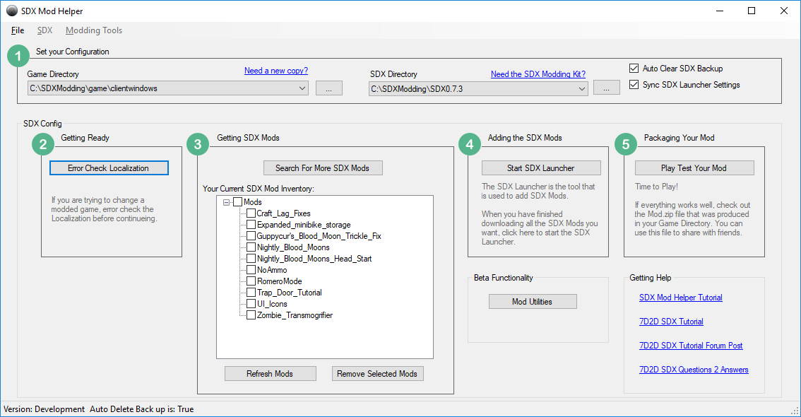
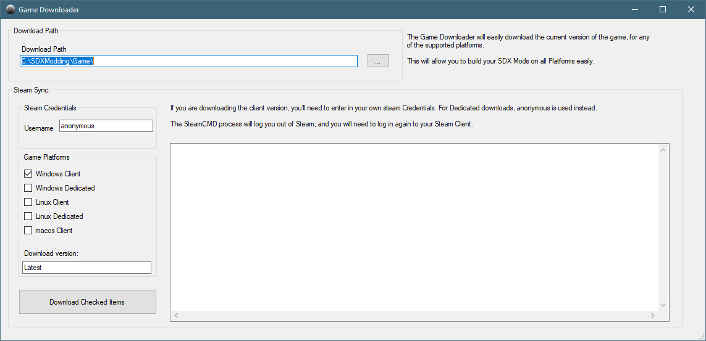
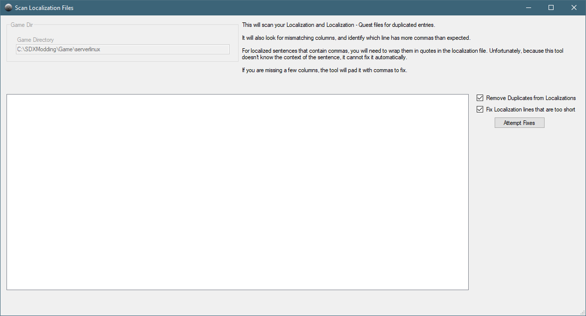
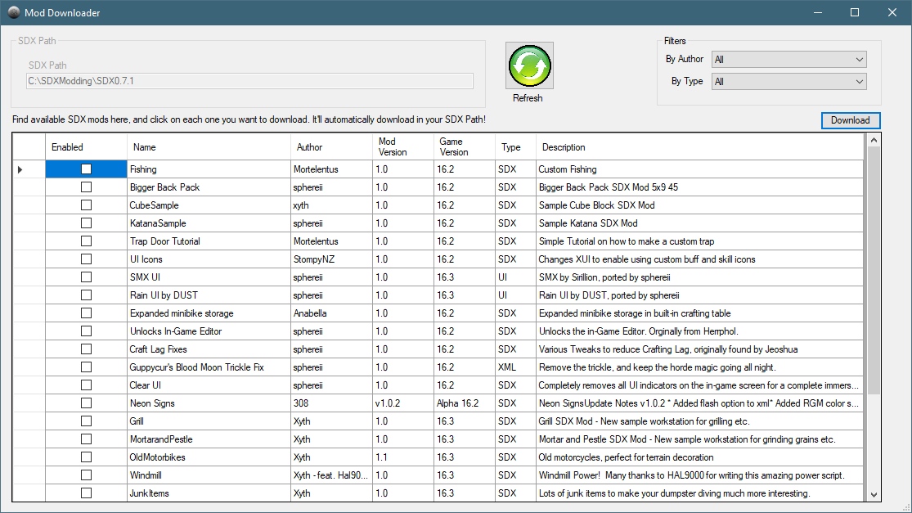

The 7D2D SDX Mod Helper is a tool designed to help you manage your SDX Mods, by giving you a guided work flow that'll lead you step by step through the process.

Your Game Directory points to which folder you want to add SDX mods from. This can be a vanilla install, a dedicated server, or it could be a modded game, such as War of the Walkers. You may click on the button with the three dots to bring up a directory browser, and navigate to another folder.
If you don't have a good copy of vanilla, you can click on "Need a new copy?" link. This will open up the Game Downloader screen, where you can install different versions of the game.
The SDX Directory needs to point to where you have installed SDX. If you are using the SDX Modding kit, this is by default going to be under C:\SDX\Modding\SDX0.7.1. You may click on the button with the three dots to bring up a directory browser, and navigate to your SDX Directrory.
Don't have SDX yet? Click on "Need the SDX modding Kit?" to be directed to the 7D2D SDX Tutorial site to get it.
The Auto Clear SDX Backup will clear the SDX back up folder if you have changed your Game Directory. For example, if you added SDX to your game, and you want to add those same SDX mods to the dedicated Linux server, you'd want to clear your back up first, then proceed. Selecting this will automatically do it.
The Sync SDX Launcher Settings will keep your SDX Mod Helper's game directory in sync with the SDX Launcher's settings. If you have this checked, it will keep the tools in sync. If you change your Game Directory in one tool, it'll update the other tool automatically.
If you have selected a modded version of the game to add SDX mods to, then you will want to run the Error Check Localization. This will check your Game Directory's localization files, looking for any errors, such as:
Mis-aligned Columns: This happens when you have too many, or too few, columns in your localization files. For example, sometimes an extra comma is missed, or added.
Duplication: Sometimes multiple entries of the same localization exists. This will remove the duplicate entries.
Having a bad set of Localization files will cause SDX to fail. When in doubt, run the Error Check Localization before you begin.
One of the key features of the SDX mod Helper is the ability to find and download mods directly into your SDX Directory.
The Search For More SDX Mods will open up the SDX Mod Browser window, where you can read about the available mods, and download them easily.
Your Current SDX Mod Inventory shows you the SDX Mods you have currently downloaded.
Refresh Mods will refresh your Mod Inventory, if you have manually copied some SDX mods into the folder.
The Remove Selected Mods will delete the SDX mods you have selected in the Your Current SDX Mod Inventory.
This section will start the SDX Launcher, allowing you to build the SDX mods into your Game Directory.
This section will start the game for you to run a Play test through your new SDX mod. It will also automatically:
Remove duplicate ItemIcons - It will look for any items that exists more than once under the Mods folder in your Game Directory, and remove duplicates.
Generate a Mod zip file - It will also generate a Mod.zip file, located in your Game Directory, that contains all the files that have been changed recently. This file can be shared with others to play your mod.
The Game Downloader is available when you click on the "Need a new copy?" on the SDX Mod Helper main screen. This will connect to Steam, either using your Steam Credentials, or using anonymous for dedicated server downloads.

Download Path: Select where you want to download the game from. You may click on the button with three dots to change the default localtion.
Each Game Platform will be downloaded to a separate folder, ie, C:\SDXModding\Game\windowsclient, C:\SDXModding\Game\linuxclient
Steam Credentials: This is where you'd put your Steam username. This is only necessary if you are downloading the client version, either Linux, Windows, or MacOS. You will be prompted for your Steam Password, and Steam Guard code, if it's your first time running from this PC.
Game Platforms: You may select one or more different types of downloads. For example, if you want a copy of the Windows client and a dedicated version, you may select Windows Client and Windows Dedicated.
Download version: By default, it will download the latest version of the game. However, if you want to download an older version, or an experimental version, simple change "Latest" to the beta name in Steam.
For example, if you want the latest experimental, change "Latest" to "latest_experimental". For a previous version, change it to "alpha16.2"
The Error Check Localization button on the SDX MOd Helper main screen will open the Scan Localization Files screen.

The Game Directory is set from the SDX Mod Helper main screen.
The following options are available:
Remove Duplicates From Localizations - This will remove duplicate lines from the localization files in the Game Directory.
Fix Localization lines that are too short - This will scan for lines which have too many, or too few, commas.
Attempt Fixes button will attempt to fix some of the localization errors it detects.
If you have too many commas in a Localizations entry, the Scan Localization Files cannot automatically fix this.You must fix this manually. That is because the Scan Localization Files does not understand the context of your line. More often than not, extra commas are related due to missing quotes over a line.
The SDX Mod Downloader will allow you to view the available SDX Mods, and download them easily.

SDX Path: This is set on the main SDX Mod Helper. This is the directory that the Mod Downloader will download to.
Filters:
By Author: If you want to see Mods by a specific author, select the Author from this list.
By Type: If you are looking for a particular type of SDX mod, select the type from this list.
The Enabled column in the SDX Mod browser selects which mod you want to download when you click on the Download button
Name: The SDX Mod's name.
Author: The author of the SDX Mod
Mod Version: The version of the SDX mod, determined by the Author.
Game Version: This determines which version of the game it was last tested on it. It may or may not be compatible with future, or past versions of the game.
Type: The type of SDX mod it is. For example, SDX implies there's changes to the DLL and code. A UI or XML type, would only be updating the XML files.
Description: A short description of what the SDX mod does.
When you have selected which SDX Mods you want to download, the Download button will download them into your SDX Path.
Created with the Personal Edition of HelpNDoc: Easily create EPub books